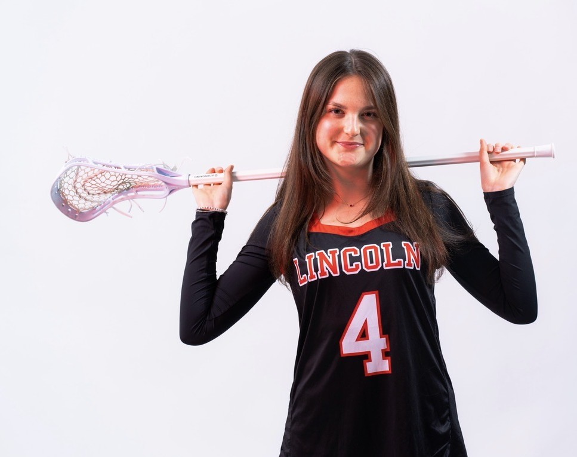
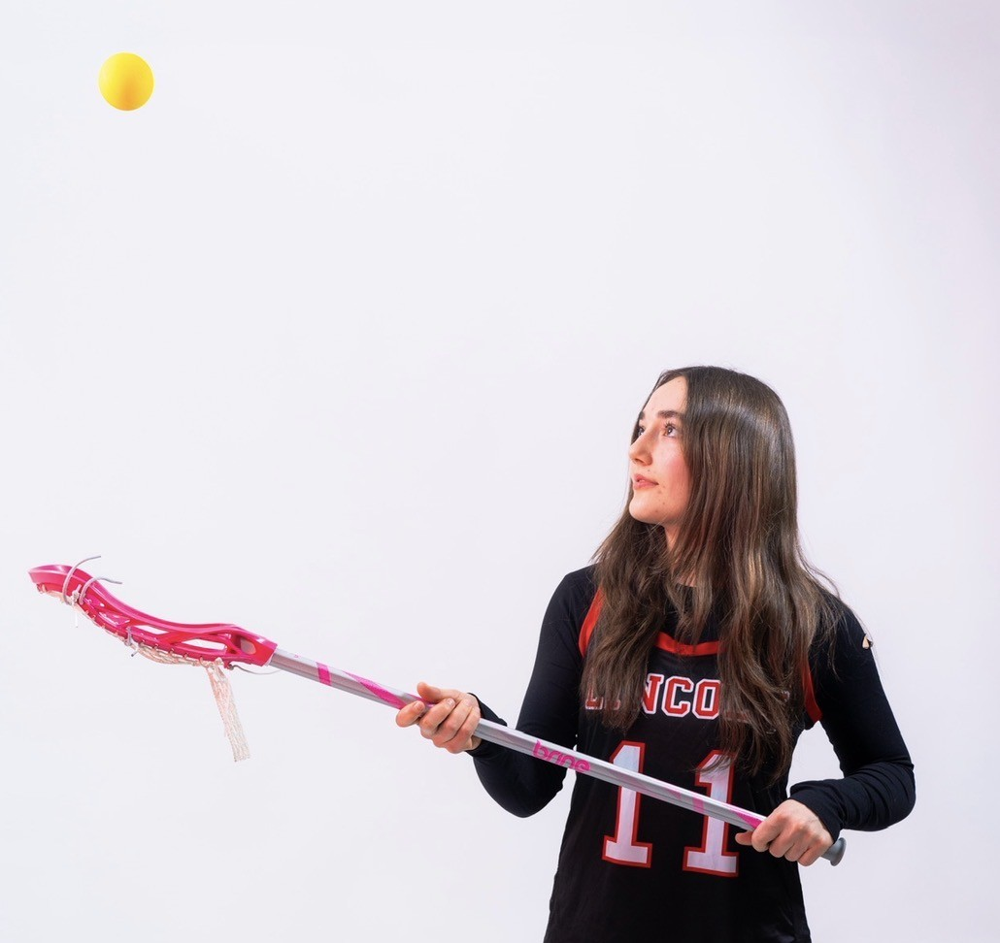

OUR TEAM
CAPTAINS

"Hi! My name is Evelyn Bieniawski and I’m a Senior at Lincoln. I’ve been playing for 8 years and usually play midfield. Being a part of the Lincoln team has been one of the most rewarding parts of high school. As a less popular sport, I’m proud of the community we’ve built to keep the energy for our team going. What I love is our attitude—we strive to have fun, work hard, and grow together, and I’m so excited to see how the team continues to evolve."

"Hey!! My name is Persephone Huish and I am a Senior. I have been playing lacrosse since my Sophomore year and I play a mix of attack and midfielder. Lacrosse has been such a fun opportunity for me to meet new people, engage in a new sport, and build up my leadership skills on and off the field. I never would have thought that my spontaneous decision to try out one day would have led to me being here three years later, but I love coming to practice everyday and seeing so much energy, commitment, and learning in the tight-knit community that we have formed. Go Lynx!!"
Contact Us